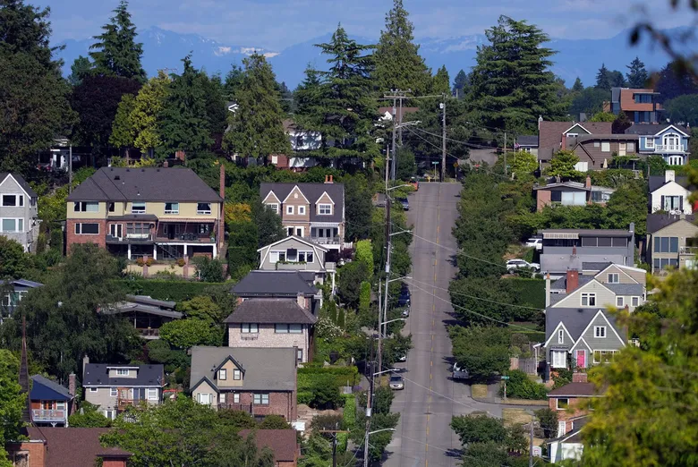

Assignment 5#
Deadline
Please complete this assignment before Feb 17, 11:59pm.
It’s competition time!#
In this week’s lab we will play a Kaggle-like competition. In these competitions, a host usually prepares a dataset and people from around the world compete against each other to build the best machine learning model. Submitted models are scored based on their predictive accuracy relative to a hidden solution file.
We will be attempting to produce an accurate model for for predicting house prices. The data contains all houses sold in King County, WA between May 2014 and May 2015 and can be downloaded from the here.
{kind=link}
Question 1 (10 points):#
Start by reading seattle-house-prices.csv and answer the following questions.
How many houses are in this dataset?
How many features are there for predicting house price?
Are there any null values in this dataset?
Which three variables are best correlated with house price (include correlation coefficients)?
Which three variables are least correlated with house price (include correlation coefficients)?
Question 2 (30 points):#
Produce a model to predict house prices. You are welcome to generate new features, scale the data, and split the data into training/testing (i.e.
train_test_split) in any way you like. You are also welcome to use the datasets contained in the data folder or other datasets that you find on the internet.Evaluate your model’s accuracy by predicting a test dataset, for example:
predictions = forest_reg.predict(X_test)
final_mse = mean_squared_error(y_test, predictions)
final_rmse = np.sqrt(final_mse)
On Monday the instructor and TA will provide an unseen set of houses which students will use to repeat their accuracy evaluation. The best models (i.e. lowest RMSE) will win prizes.
We will evaluate the models using a simple
mean-squared-erroras follows:
mse = mean_squared_error(y_test , predictions)
rmse = np.sqrt(final_mse)
Important
Save your notebooks locally as both .ipynb and .pdf formats but only submit the pdf to Canvas.
Task 1 (10 points):#
Deadline
Please complete this task by Sunday Feb 12, 11:59pm.
It’s time to think about a final project! Some guidance for picking a final project idea can be found here. Note that we will be available during the labs this week to discuss ideas.
Submit a project idea to me and the TA via email. At this stage, it’s perfectly OK if the idea is a little vague.
Come to next class (Feb 13) ready to share your idea(s) in small groups and provide feedback to others in the next lab